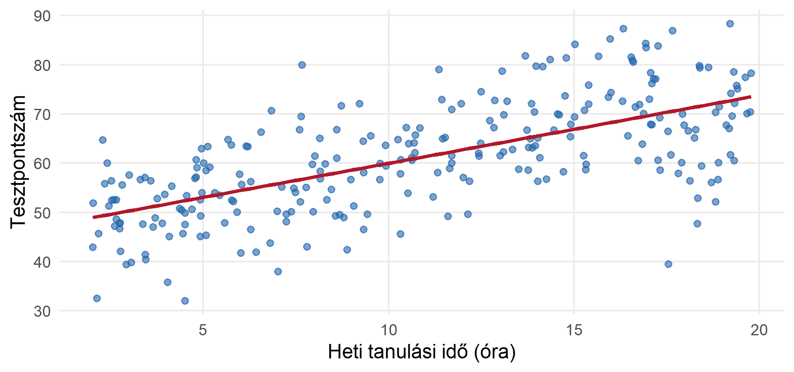
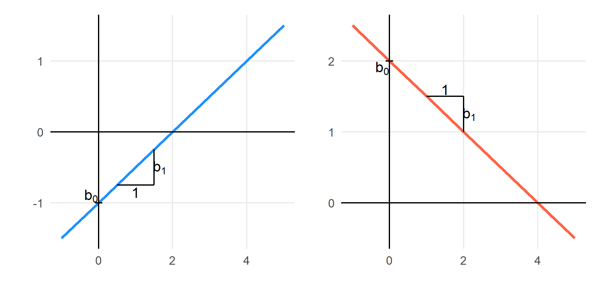
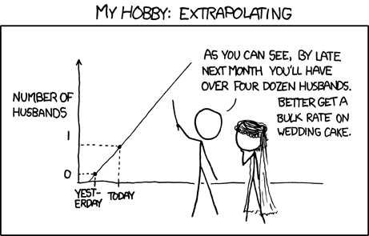
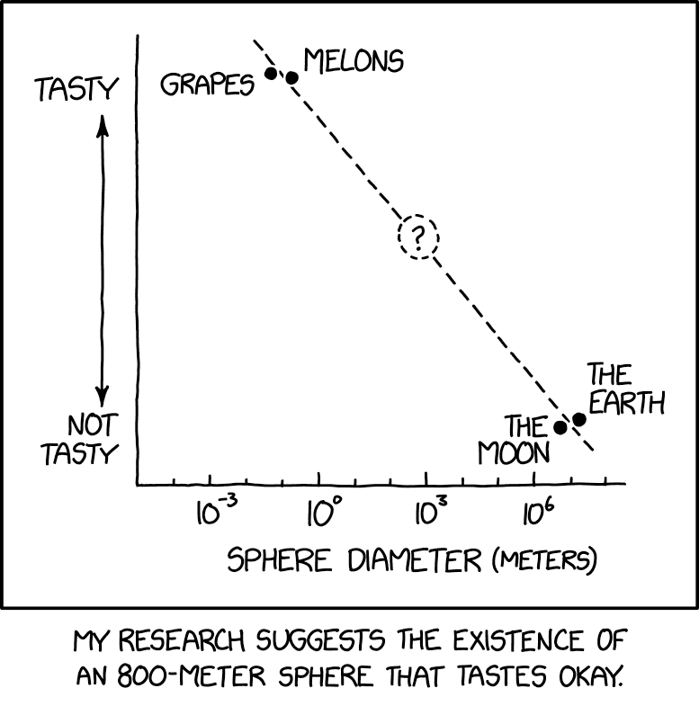
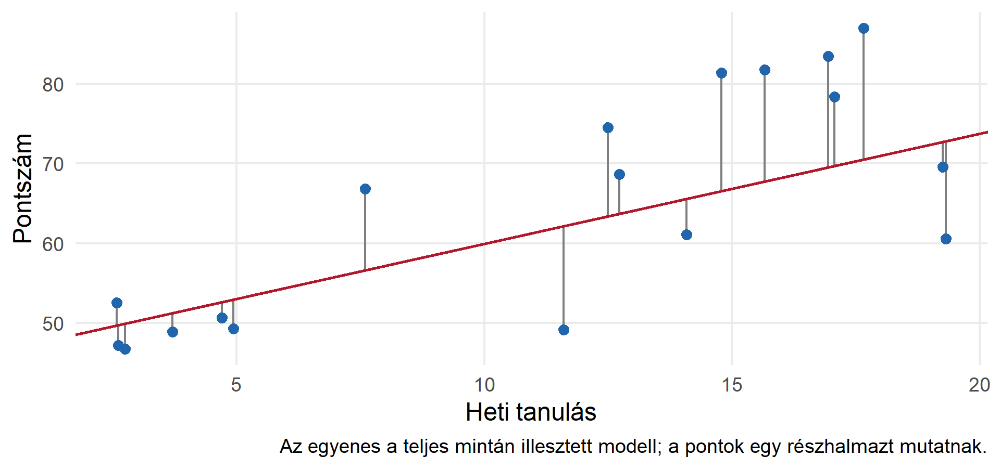
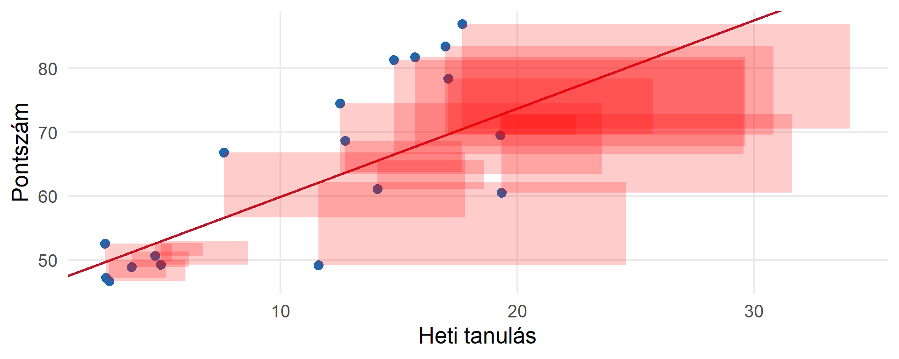

Statisztika 2. előadás
A korreláció azt vizsgálja, van-e (lineáris) kapcsolat két változó között, és hogy az milyen erős
… leírja, modellezi ezt a kapcsolatot
A regresszióelemzés célja lehet
A mai alkalom végére:
A témakör végére:
Különbség a korrelációhoz képest: nem kell, hogy mindkettő valószínűségi változó legyen
Kérdés: hogyan függ össze a tanulásra fordított idő és egy teszt pontszáma?
| Változó | Szerep | Mértékegysség |
|---|---|---|
| Tesztpontszám | Kimenet: \(Y\) | Pontszám |
| Heti tanulásra fordított idő | Prediktor: \(X\) | Óra |
| Előzetes tudás | Kontrollváltozó | Pontszám |
| Heti munkaidő | Kontrollváltozó | Óra |
| Szak | Kategorikus prediktor | szociológia / politológia / kommunikáció |

Vizsgálja meg a kapcsolat irányát, alakját, a szóródást és a szokatlan eseteket.
\[Y_i=\beta_0+\beta_1X_i+\varepsilon_i.\]
A modell a feltételes átlagot, nem minden egyes ember pontos kimenetét írja le.
\[E(Y_i\mid X_i=x)=\beta_0+\beta_1x.\]
Többféleképpen lehetséges, de a lényeg:
A kettő (vagy több) változó között függvényszerű kapcsolatot modellezünk:
\[ \begin{align} Y_i&=\beta_0+\beta_1X_i+\varepsilon_i. \\[10pt] Y_i&=b_0+b_1X_i+e_i \\ \widehat Y_i&=b_0+b_1X_i \\ e_i&=Y_i-\widehat Y_i. \end{align} \]
| Jelölés | Jelentés |
|---|---|
| \(\beta_0,\beta_1\) | Ismeretlen populációs paraméter |
| \(b_0,b_1\) | Mintából kapott becslés |
| \(\widehat Y_i\) | Becsült kimenet |
| \(\varepsilon_i\) | Nem megfigyelhető populációs hibatag |
| \(e_i\) | Megfigyelhető mintabeli maradék |
Lineáris függvény: \[ y=ax+b \\[15pt] \widehat Y_i=b_0+b_1X_i \] Mit jelent \(a\) és \(b\)?

Illusztratív egyenlet:
\[\widehat{\text{P}}=40+2\cdot\text{TI}\] A 40-es konstans a nulla tanulási óránál becsült átlag; ha nulla nem szerepel az adatok tartományában, ez extrapoláció.
A 2-es szorzótényező adja a meredekséget: egy további heti tanulási órához átlagosan 2 ponttal magasabb becsült pontszám társul.
Ha olyan tartományra adunk becslést, amely kívül esik a megfigyelt értékek tartományán.

Extrapoláció az xkcd tálalásában

# Becslés\[b_1=\frac{\sum(X_i-\bar X)(Y_i-\bar Y)}{\sum(X_i-\bar X)^2} \\ b_0=\bar Y-b_1\bar X\]
A konstanssal illesztett OLS-egyenes átmegy a \((\bar X,\bar Y)\) ponton.
\[b_1=r\frac{s_Y}{s_X}\]
Ez a képlet összeköti a korrelációt a regresszióval: a meredekség a lineáris együttjárást az eredeti változók mértékegységébe helyezi.
Az OLS függőleges eltéréseket minimalizál, nem a pontok egyenestől mért legrövidebb geometriai távolságát.


Az OLS azokat az együtthatókat választja, amelyek minimalizálják:
\[SSE=\sum_{i=1}^n e_i^2=\sum_{i=1}^n(Y_i-b_0-b_1X_i)^2.\]
| Korreláció | Regresszió |
|---|---|
| Szimmetrikus: \(r_{XY}=r_{YX}\) | Meghatározott kimenetet modellez |
| Mértékegység nélküli | A meredekségnek mértékegysége van |
| Együttjárás erőssége | Feltételes átlag és előrejelzés |
| Nem ad becslési egyenletet | Becsült értékeket ad |
A parciális korreláció két maradék kapcsolata. A többszörös regresszió ugyanennek a kiigazításnak a logikáját is használja.
Modellilleszkedés
Mennyit magyaráz a modell a kimeneti változó varianciájából?
Hipotézisvizsgálat
A mintában megfigyelt kapcsolat alapján mit állíthatunk a sokasági kapcsolatra vonatkozóan?
Az előrejelzés bizonytalansága
Milyen határok között van a tényleges feltételes átlag? Milyen értékek közé eshetnek az újabb megfigyelések? Milyen értékek közé esik az összes egyedi eset meghatározott része?
Lineáris regresszió